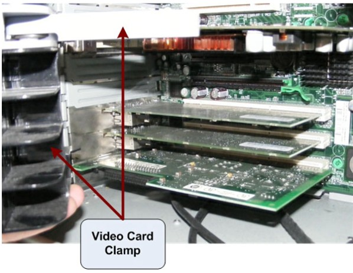
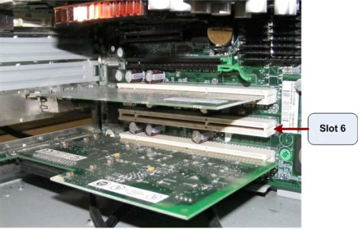
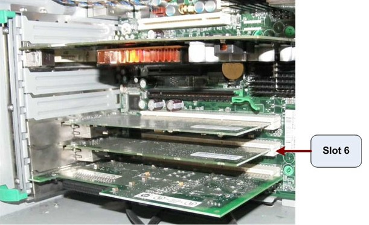

Operating Documentation
Direction 5307452-8EN, Rev# 4
Discovery CT750 HD Service Methods - Adv
Operating Documentation |
| Required Persons | Preliminary Reqs | Procedure | Finalization |
|---|---|---|---|
| 1 |
The System Option Licenses are tied to the Host Computer Ethernet (eth0) MAC address. The appropriate NIC card (Port C, Bottom NIC Card, Slot 6) can be exchanged, if one is reasonably certain that the Host Computer failure is not related to the NIC cards. This will allow for the reuse of System Option Licenses, otherwise new Licenses must be obtained.
This procedure describes and illustrates the steps necessary to exchange (transfer) the NIC Card (Port C, Slot 6) from an existing Host Computer to a new Host Computer.
| NOTE: | This procedure is used in conjunction with the Host Computer Replacement procedure. |
| Last Revised: | 26 June 2008 |
| Item | Qty | Effectivity | Part# | Manufacturer | |
|---|---|---|---|---|---|
| Standard FE Toolkit | 1 | - | - | - | |
| POTENTIAL FOR INJURY TO SERVICE PERSONNEL | |
| HOST COMPUTER CHASSIS CAN WEIGH IN EXCESS OF 40 POUNDS. DEPENDING ON YOUR HEIGHT AND ACCESS TO EQUIPMENT REMOVAL/INSTALLATION, LIFTING ASSISTANCE MAY BE REQUIRED. | |
| USE YOUR JUDGMENT TO DETERMINE IF LIFT ASSIST OR A SECOND PERSON MAY BE REQUIRED TO ASSIST IN REMOVAL AND INSTALLATION. |
TO PREVENT DAMAGE TO COMPONENTS WITHIN THE HSDA, OBSERVE THE
FOLLOWING ESD PRECAUTIONS:
FOR FURTHER INFORMATION REGARDING ESD PROTECTION, REFER TO THE SAFETY CHAPTER IN THIS PUBLICATION | |
| IN ORDER TO MEET EMC REQUIREMENTS, THE CHASSIS MODULES MUST BE PROPERLY INSTALLED AFTER SERVICING. CHECK THAT THE MODULES ARE MOUNTED FIRMLY IN PLACE AND LOCKED DOWN WHERE APPLICABLE. | |
| FOLLOW ALL REQUIRED SAFETY AND PPE PROCEDURES CUSTOMARY FOR YOUR ORGANIZATION WHEN WORKING ON THIS PRODUCT. | |
| Condition | Reference | Eff |
|---|---|---|
Space will be required for working with two (2) Host Computers. May sure ample space is available. | - | - |
Only trained service personnel should service the GE CT Scanner. | - | - |
Open the original Host Computer Side Cover.
| NOTE: | The System Option Licenses are tied to the Host Computer Ethernet (eth0) MAC Address. The appropriate NIC cards (Port C, Bottom NIC Card, Slot 6) can be exchanged, if one is reasonably certain that the Host Computer failure is not related to the NIC cards. This will allow for the reuse of System Option Licenses, otherwise new Licenses must be obtained. |
Remove the Support Clamp that holds the Video Card in place.
Illustration 1: Video Card Clamp Removal

Loosen the Expansion Card Retention Bracket to allow removal of NIC Card.
Remove the NIC from Slot 6 (next to bottom slot) set aside.
Illustration 2: NIC Card (Slot 6) Removal

Open the replacement Host Computer Side Cover.
Remove the Support Clamp that holds the Video Card in place.
Loosen the Expansion Card Retention Bracket to allow removal of NIC Card
Remove the NIC Card from Slot 6 and install the original Host Computer NIC set aside earlier.
Install the Host Computer replacement NIC Card in the original Host Computer.
Illustration 3: NIC Card (Slot 6) Installed

Replace the Expansion Card Retention Bracket in both Host Computers
Replace the Expansion Card Retention Bracket in both Host Computers
Replace the Side Cover on the Host computers.
| NOTE: | IN ORDER TO MEET EMC REQUIREMENTS, THE CHASSIS COVER MUST BE PROPERLY INSTALLED AFTER SERVICING. CHECK THAT THE COVERS ARE MOUNTED FIRMLY IN PLACE AND LOCKED DOWN WHERE APPLICABLE. |
No finalization required.